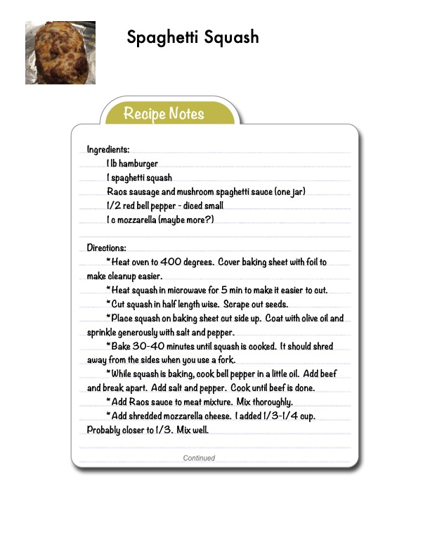

Spaghetti Squash

Original cookbook page 23
A low-carb, hearty dish featuring baked spaghetti squash topped with a seasoned ground beef and bell pepper mixture in Rao's sausage and mushroom spaghetti sauce, finished with melted mozzarella cheese.
Prep: 15 minutes • Cook: 50-60 minutes • Total: 60-75 minutes
Ingredients
- 1 lb hamburger (ground beef)
- 1 spaghetti squash
- 1 jar Rao's sausage and mushroom spaghetti sauce
- 1/2 red bell pepper, diced small
- 1 cup mozzarella cheese (maybe more)
- Olive oil
- Salt and pepper
Instructions
- Preheat oven to 400°F. Cover baking sheet with foil for easy cleanup.
- Heat squash in microwave for 5 minutes to make it easier to cut.
- Cut squash in half lengthwise. Scrape out seeds.
- Place squash on baking sheet cut side up. Coat with olive oil and sprinkle generously with salt and pepper.
- Bake 30-40 minutes until squash is cooked and shreds away from sides when tested with a fork.
- While squash is baking, cook bell pepper in a little oil. Add beef and break apart. Add salt and pepper. Cook until beef is done.
- Add Rao's sauce to the meat mixture. Mix thoroughly.
- Add shredded mozzarella cheese (1/3-1/4 cup, probably closer to 1/3). Mix well.
- Recipe continues on next page for final assembly steps.
Recipe #23 from collection